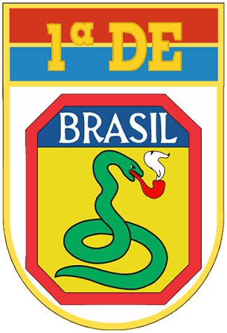

Comando de Operações Especiais
Organização vinculada diretamente ao Exército da FAAAB, fora das divisões.
Consultar comando →As grandes unidades reúnem brigadas de diferentes especialidades. Cada divisão possui sua própria organização dentro da FAAAB.

4 brigadas

3 brigadas

2 brigadas
Organização vinculada diretamente ao Exército da FAAAB, fora das divisões.
Consultar comando →Comando de área que reúne BPE, 1º RCG e BGP na FAAAB. As divisões temáticas do jogo não são apresentadas como subordinadas ao CMP.
Abrir site do CMP →Área responsável pela organização dos estabelecimentos de ensino e formação do Exército no projeto.
Consultar educação →Incluem o Centro de Inteligência do Exército (CIE), o Centro de Instrução de Guerra na Selva (CIGS) e outros centros de especialização.
Resumo informativoO Batalhão de Comunicações (B Com) consta no cadastro de apoio. BPE e 1º RCG passam a ser consultados diretamente no site do CMP, sem duplicar sua vinculação.
Resumo informativo